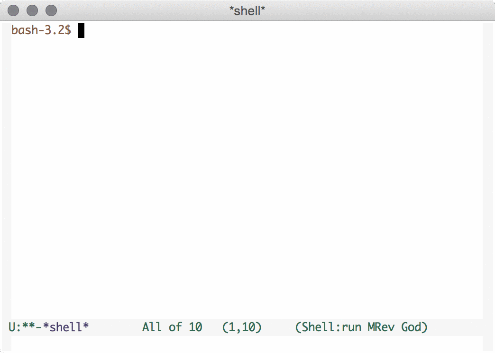
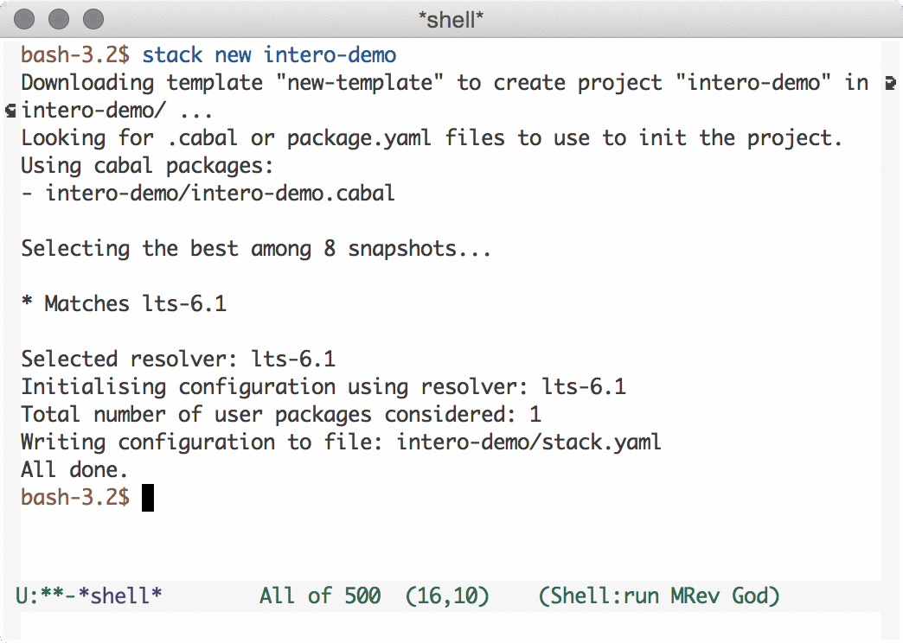
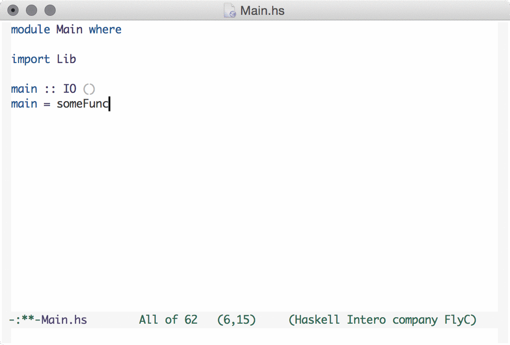
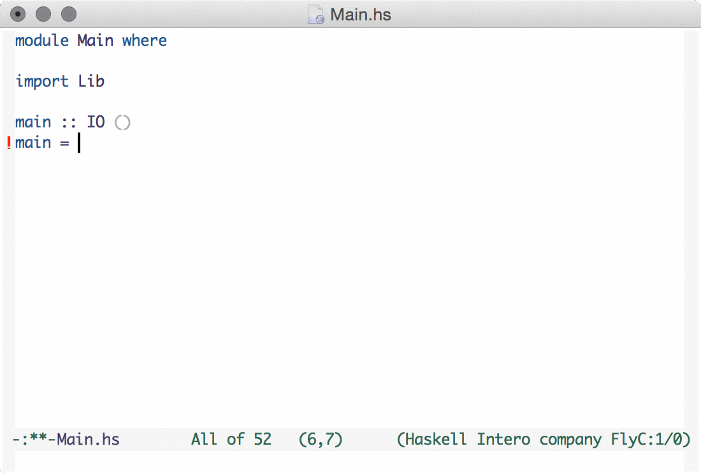
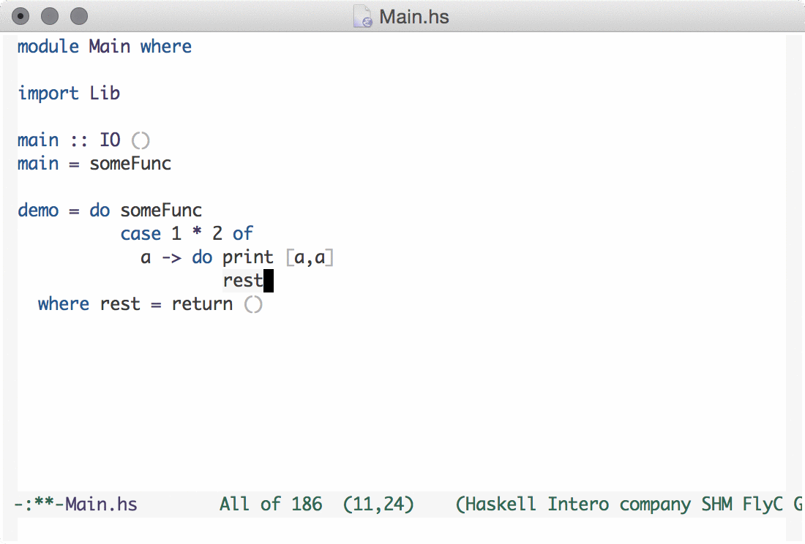
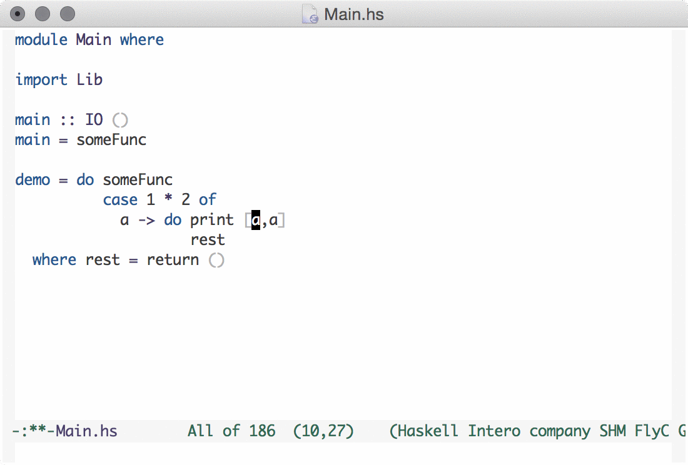

Complete interactive development program for Haskell
Tested on GHC 8.0.1, GHC 7.10.3, GHC 7.10.2, and GHC 7.8.4.
Backwards compatibility will be maintained as far back as is possible.
The Intero backend used by the Emacs mode is a fork of GHCi, it behaves like your old friend GHCi, but with more features.
Support for other editors is not promised, but patches are welcome.
Intero works best with Stack. Tested on a variety of Hackage projects, internal client projects, from small to huge.
If your project works with Stack, it almost definitely works with Intero.

The Emacs mode automatically installs the proper Intero backend program in your stack environment. Not globally!
Each Stack project can have a separate GHC or LTS version, Intero takes care of this by installing a fresh copy in each LTS version.
After installing, it automatically boots up Intero and starts checking the current file.

Intero works with and configures the marvelous Flycheck package out of the box. Giving check as-you-type, on a keybinding of your change, and/or on save.
Errors can be seen by going to the location of the
error, or by hitting C-c ! l to see a
list of errors.
One can also jump to errors: C-c ! n for
next error, C-c ! p for
previous error.

Intero works with the Company package out of the box. Auto-complete as-you-type is based on identifiers that are locally defined in the declaration, in the module, or imported within the module.
Continues to remember its completions through type errors. In the future, completion will be type-driven.

After a module has been type checked, you can jump to the definition of any locally defined or imported identifier.
Uses the standard Emacs keybinding for
jumping, M-.. Remembers locations even
when a module no longer compiles.

You can hit C-c C-t to display the type of the
identifier at point, or select any text to see the
type.
Remembers type information even when a module no longer compiles.
